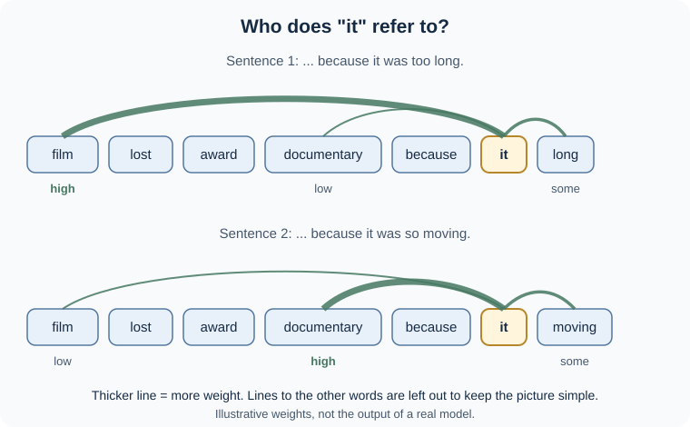
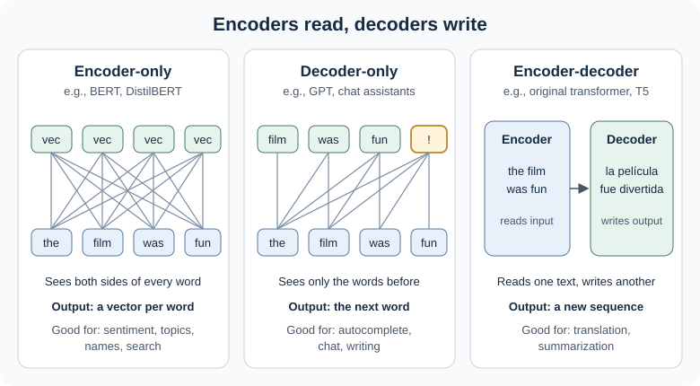
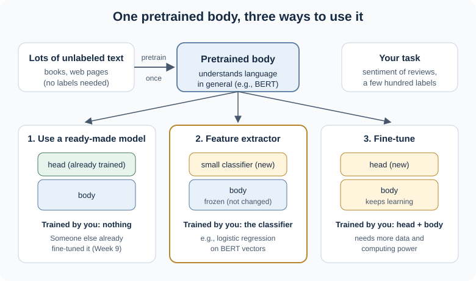

10.1 Transformers, Pretrained Models, and Transfer Learning#
Last week ended with a question: if reading one word at a time makes it hard to remember the beginning of a long text, what could work better? This week answers it and then asks a very practical question:
How do transformers understand words in context, and how can we reuse a model that someone else already trained?
Most NLP work today does not start from scratch. People pick a pretrained model, check whether it suits their task, and adapt it. By the end of these notes you should be able to:
explain in plain words how attention lets a word “look at” other words
explain why the same word can get different meanings in different sentences
tell apart the three main families of transformer models
describe three ways to use a pretrained model
explain how BERT learns by filling in blanks
read a model card and decide whether a model fits your task
We will reuse the movie review from Weeks 7 and 9:
“Everyone told me the film was boring, but I loved it.”
Model weights and attention patterns shown in the figures are illustrative. They show the idea, not the output of a real trained model. You will look at real model outputs in the coding practice.
1. Where We Left Off#
Note
Connecting the dots. You know: RNNs and LSTMs read a text one word at a time and carry a summary forward. New problem: that summary has limits. Next: a model that lets every word look at every other word directly.
In Week 9 we saw three limits of recurrent models:
They read one step at a time, so training on large amounts of text is slow.
They squeeze what they have read into one fixed-size summary.
Even with LSTM gates, distant words fade.
We also saw a preview of a fix called attention: instead of relying only on the final summary, a model can look back at all earlier words and decide how much each one matters right now.
In 2017, a team at Google asked a bold question: what if we keep attention and drop the step-by-step reading entirely? Their model, the transformer, is built on attention without recurrence. Because it does not have to wait for step t − 1 before handling step t, it can process many positions at once during training [VSP+17]. That made it practical to train on far more text than before, and it became the foundation of BERT, GPT, and today’s chat assistants.
2. Attention: Letting Words Look at Each Other#
Note
Connecting the dots. You know: word embeddings from Module 3 give each word one vector. New problem: a word’s meaning depends on the words around it. Next: attention, which builds a new vector for each word in its context.
The idea#
Read these two sentences:
The film lost the award to the documentary because it was too long.
The film lost the award to the documentary because it was so moving.
You probably had no trouble deciding that it means the film in the first sentence and the documentary in the second. You did this by looking at other words in the sentence (long, moving, lost, award) and deciding which ones mattered for understanding it.
Self-attention gives a model a way to do something similar. For each word, the model:
compares that word with every word in the text,
gives each one a weight that says how relevant it is, and
builds a new vector for the word by mixing in information from the others, using those weights.
The weights are not written by hand. The model learns them from huge amounts of text. Fig. 21 shows the idea for it.

Fig. 21 Self-attention lets it draw on the words that help explain it (illustrative weights)#
This idea comes from the textbook by Jurafsky and Martin, which uses a similar pair of sentences about a chicken and a road [JM26c] (§7.1).
Same word, different meaning#
In Module 3, a word embedding such as word2vec gave each word one vector, whatever the sentence. Now compare:
The film’s score was haunting. (the music)
The film’s score on the review site was low. (the rating)
A static embedding gives score the same vector both times. After attention, a transformer gives score a different vector in each sentence, because it mixed in haunting in one and review site and low in the other. These context-aware vectors are called contextual embeddings [JM26c] (§7.1). They are a big reason transformers work so well: the model’s picture of a word now depends on how the word is used.
Several kinds of attention at once#
A transformer does not run attention just once. It runs several attention “heads” side by side. Each head has its own learned weights, so one head might focus on which noun a pronoun refers to, while another notices negation words like not, and another tracks nearby words [JM26c] (§7.1). Researchers cannot always say exactly what each head does, but the idea of many viewpoints working together is a helpful picture. This is called multi-head attention.
Transformers also stack many attention layers. Each layer refines the vectors from the layer below, so meaning is built up gradually.
Word order still matters#
Here is a puzzle. Attention compares every word with every other word, but nothing in that comparison says which word came first. Look at these two sentences:
The film beat the documentary.
The documentary beat the film.
They contain exactly the same words. If a model only knew which words were present, it would treat them as the same sentence, just like the bag-of-words vectors in Module 3. The meanings are opposite, so order clearly matters.
Transformers solve this by adding a position signal to each word’s vector before attention starts: a little bit of information that says “I am word 1”, “I am word 2”, and so on [JM26c, VSP+17]. In Week 9, order came from reading word by word. In a transformer, order is added as information, and attention can then use it.
For the curious: queries, keys, and values
Inside an attention head, each word plays three roles [JM26c] (§7.1.1):
a query: “what am I looking for?”
a key: “what can I offer to others who are looking?”
a value: “what information do I pass on if I am chosen?”
The model scores how well one word’s query matches another word’s key, turns the scores into weights with a softmax (the same softmax you met in Week 5), and adds up the values using those weights. In symbols, for all words at once:
You do not need this formula for the course. It only makes precise the “compare, weight, mix” idea above [VSP+17].
3. Three Families of Transformer Models#
Note
Connecting the dots. You know: attention builds contextual vectors. New problem: different tasks need different kinds of output. Next: three model families built from the same parts.
All transformer models use attention, but they are arranged in three main ways [JM26c] (§9.1):
Family |
How words can look at each other |
What it is good at |
Examples |
|---|---|---|---|
Encoder-only |
Every word sees words on both sides |
Understanding a text: classification, finding names, matching |
BERT, RoBERTa, DistilBERT |
Decoder-only |
Each word sees only the words before it |
Writing text one word at a time: autocomplete, chat |
GPT models and most chat assistants |
Encoder-decoder |
An encoder reads the input; a decoder writes a new output |
Turning one text into another: translation, summarization |
The original transformer, T5 |

Fig. 22 The same building blocks arranged three ways#
A simple way to remember the difference: encoders read, decoders write. An encoder such as BERT sees the whole sentence at once and turns it into rich vectors, which makes it a great base for a classifier. A decoder can only look backward, which is exactly what you need to predict the next word, so decoders generate text. Encoders like BERT are not used to write running text [JM26c] (§9.1).
Important
Today’s chat assistants are decoder models that received extra training after pretraining to follow instructions [JM26c] (§7, introduction). BERT is an encoder. Both are transformers, but they are built for different jobs. When you choose a model, first ask: do I need to understand a text or to produce a new one?
4. Pretraining and Transfer Learning#
Note
Connecting the dots. You know: in Week 9, language models learned by predicting the next word, with no human labels. New problem: most real tasks have only a small labeled dataset. Next: learn general language skills once, then reuse them.
Why reuse a model?#
Imagine you want a classifier for customer reviews of a new product, and you have only 500 labeled reviews. Training a large model from scratch on 500 examples would not work: there is not enough data for it to learn English, let alone opinions.
The solution has two stages:
Pretraining. A model learns from a huge amount of unlabeled text, such as books and web pages. The text itself provides the answers (for example, the next word), so no one has to label anything. This is self-supervised learning, which you met in Week 9. Pretraining is expensive, but it is done once, usually by a large lab.
Adapting. You take the pretrained model and teach it your specific task with a small labeled dataset.
Reusing knowledge learned on one task to help with another is called transfer learning [JM26c] (Ch. 9 introduction). A helpful picture is a body and a head. The body is the large pretrained model that understands language in general. The head is a small new part on top that gives the answer your task needs, such as “positive” or “negative” [TvWW22].

Fig. 23 One pretrained body, three ways to use it#
Three ways to use a pretrained model#
Approach |
What you do |
What gets trained |
When it fits |
|---|---|---|---|
1. Use a ready-made model |
Download a model that someone already adapted to your task, such as a sentiment classifier, and run it |
Nothing |
You want quick results and a suitable model already exists |
2. Use it as a feature extractor |
Keep the pretrained body frozen, turn each text into a vector, and train a small classifier (for example, the logistic regression from Week 5) on those vectors |
Only the small classifier |
You have a little labeled data and limited computing power |
3. Fine-tune it |
Add a head and keep training the body and head together on your labeled data |
The head and (some or all of) the body |
You have more labeled data and need the best accuracy |
The BERT paper compared approaches 2 and 3 and found that both can work well [DCLT19]. Approach 1 is what you did in the Week 9 Hugging Face activity, and it is also how most people use chat assistants: they give instructions to a model that is already trained, rather than training it themselves [JM26c] (§9.4).
You have actually used transfer learning before. In Module 3, pretrained word embeddings such as word2vec or GloVe carried knowledge learned from large text collections into your own projects. Transformers take this much further: instead of reusing one vector per word, you reuse a whole model that understands words in context.
A bit of history: transfer learning before transformers
Transfer learning in NLP did not start with transformers. In 2018, a method called ULMFiT pretrained an LSTM language model on Wikipedia, adapted it to movie reviews, and then fine-tuned it as a sentiment classifier. With only 100 labeled examples, it matched models trained from scratch on 100 times more data [HR18, TvWW22]. Later that year, BERT and GPT combined this pretrain-then-adapt recipe with the transformer, and the approach took off.
5. BERT: Learning by Filling in Blanks#
Note
Connecting the dots. You know: encoders see both sides of a word, and models are pretrained on unlabeled text. New problem: how do you pretrain a model that sees both sides? Next: a fill-in-the-blank game.
BERT (Bidirectional Encoder Representations from Transformers) was released by Google in 2018 and is the best-known encoder model [DCLT19].
Why “predict the next word” does not work for BERT#
A decoder learns by predicting the next word. That would be far too easy for BERT: since BERT can see the whole sentence, the “next word” is already visible to it [JM26c] (§9.3).
Masked language modeling#
Instead, BERT plays a fill-in-the-blank game. During pretraining, some words in each sentence are hidden behind a special [MASK] token, and BERT must guess them using the words on both sides [DCLT19]. For example:
Everyone told me the film was [MASK], but I loved it.
To fill in this blank well, it helps to read the words after the blank: but I loved it suggests the missing word is something negative, such as boring or slow. A left-to-right model reading “Everyone told me the film was …” could not see that clue yet. This training game is called masked language modeling, and it is how BERT learns contextual vectors that use the whole sentence. You will try this yourself in the coding practice.
For the curious: how much is masked?
From BERT to a sentiment classifier#
After pretraining, BERT is a good reader but does not know anything about sentiment yet. To turn it into a classifier, we add a small head on top [JM26c] (§9.4.1):
Tokenize the review. BERT adds a special
[CLS]token at the start and[SEP]at the end. You saw these tokens in the Week 9 Hugging Face activity.Run the review through BERT. Every token, including
[CLS], now has a contextual vector.Use the vector for
[CLS]as a summary of the whole review and pass it to a small classifier that outputs “positive” or “negative”.
The [CLS] vector is a BERT-style convention, not a universal rule. Other models use a different special token, or average the vectors of all the tokens, to represent a whole text [JM26c] (§9.4.1). The general idea is the same: turn the text into one vector, then classify that vector.
BERT is also fairly small by today’s standards. The base version has about 110 million learned numbers (parameters) [DCLT19], while today’s largest chat models have hundreds of billions. That makes BERT-family models practical for everyday classification tasks, even on a laptop or in Google Colab.
6. Choosing a Pretrained Model#
Note
Connecting the dots. You know: how pretrained models are built and adapted. New problem: there are a huge number of models to choose from. Next: how to pick one and how to check it.
Where models live#
The Hugging Face Hub is a large public library of pretrained models and datasets, which you used in Week 9 [TvWW22]. Each model on the Hub comes with:
a name, called a checkpoint, such as
distilbert/distilbert-base-uncasedits own tokenizer, which must match the model (another model’s tokenizer would give the wrong token IDs)
a model card, the model’s “label” or user guide
Start with the task#
Before searching for a model, decide what you need, using the families from Section 3:
You want to… |
Look for… |
|---|---|
label a whole text (sentiment, topic, spam) |
an encoder fine-tuned for text classification |
find names of people, places, or products |
an encoder fine-tuned for token classification (named entity recognition) |
pull an answer out of a passage |
a model fine-tuned for question answering |
translate or summarize |
an encoder-decoder model |
write new text or chat |
a decoder model |
These are the same kinds of tasks covered in the overview of transformer applications by Tunstall and colleagues [TvWW22].
Read the model card#
A model card tells you what the model was trained on, what it is meant for, and where it may fail. When you open one, look for:
Training data. What texts did it learn from? A sentiment model trained on movie reviews may struggle with medical notes, tweets, or product questions.
Labels. What answers can it give? A model with only “positive” and “negative” has to force a mixed or neutral review into one of those two labels.
Language. Most popular models are trained mainly on English.
Intended uses and limitations. Good model cards say where the model should not be used, and may report known biases.
Size and speed. Smaller models (for example DistilBERT, which you will use in the coding practice) run faster and fit more easily in Colab.
A model with no model card, or a very thin one, is a warning sign: you have little information about what it learned.
Check it on your own data#
A model’s reported accuracy was measured on someone else’s test data. Before you trust a model, take a small labeled sample of your texts and measure accuracy, precision, and recall, just as in Week 5. Look at the errors, too. In Week 9 you saw that negation, contrast, and mixed opinions can trip models up. It is also worth comparing against a simple baseline such as TF-IDF with logistic regression: if the simple model is nearly as good, it may be the better choice because it is faster and easier to explain.
Know the common limits#
Pretrained transformers are powerful, but they are not magic [TvWW22]:
Confidence is not correctness. A score of 0.99 means the model is sure, not that it is right.
Bias. Models learn from large collections of web and book text, and they can pick up the stereotypes in that text.
Hard to explain. It is difficult to say exactly why a transformer made a particular prediction.
Long texts. Because every word compares itself with every other word, the work grows quickly with text length, so many models have a maximum input length and may cut off the end of a long document [JM26c] (§7.3).
Language coverage. Good pretrained models are much easier to find for English than for many other languages.
7. Key Takeaways and Knowledge Check#
Static embeddings (Module 3) |
RNN / LSTM (Week 9) |
Transformer encoder (BERT) |
Transformer decoder (GPT) |
|
|---|---|---|---|---|
One vector per word or per word in context? |
Per word |
Per word in context, built left to right |
Per word in context, using both sides |
Per word in context, using the left side only |
How it reads |
Does not read order |
One word at a time |
All words at once, with attention |
All words at once in training, writes one word at a time |
Typical use today |
Simple features, similarity |
Smaller sequence tasks |
Classification, labeling, search |
Text generation, chat |
Attention lets every word build its meaning from the words around it, using learned weights.
The result is contextual embeddings: the same word gets different vectors in different sentences. Transformers add position information because attention alone ignores order.
Encoders read, decoders write, and encoder-decoders turn one text into another.
Pretraining teaches general language skills from unlabeled text. Transfer learning reuses those skills for your task: use a ready-made model, use it as a feature extractor, or fine-tune it.
BERT is an encoder pretrained by filling in masked words, using context on both sides.
Choose models by task, read the model card, and test on your own data.
Check your reasoning#
In “The critic praised the film because it was honest,” which word might it refer to? How does self-attention help a model decide?
Why does a transformer need position information, when an RNN did not?
For each task, which model family fits best? (a) sorting support emails into topics, (b) suggesting a reply to a customer, (c) translating product descriptions into Spanish.
Your team has 300 labeled reviews and a free Colab notebook. Which of the three ways of using a pretrained model would you try first, and why?
A sentiment model was fine-tuned on movie reviews. A classmate wants to use it on hospital patient feedback. What would you check on the model card, and what test would you run before trusting it?
Suggested reasoning
It could refer to the critic or to the film; honest fits a review or a film, so readers may disagree. Self-attention lets the vector for it draw on critic, film, and honest, with learned weights, so the model can use the surrounding words to decide.
An RNN reads words in order, so order is built into how it works. Attention compares all words at once and has no built-in sense of which came first, so “The film beat the documentary” and “The documentary beat the film” would look the same without a position signal.
(a) An encoder classifier, such as a BERT-family model. (b) A decoder model that generates text. (c) An encoder-decoder translation model (or a large decoder model that can translate).
Start with a ready-made model if one fits the labels you need, and measure it on your 300 reviews. If none fits, use the pretrained model as a feature extractor and train logistic regression on its vectors: it needs little data and little computing power. Fine-tuning is an option later if those results are not good enough.
Check the training data (movie reviews, not health care), the labels (only positive and negative?), the language, and any listed limitations. Then label a sample of real patient feedback, measure accuracy, precision, and recall, and read the mistakes, especially mixed or neutral comments.
Next, the coding practice lets you explore a BERT-family model hands-on: you will look at subword tokens, play BERT’s fill-in-the-blank game, compare contextual vectors, test a sentiment classifier on tricky sentences, and read a real model card.

References#
Main source for attention, contextual embeddings, transformer families, masked language models, and fine-tuning: [JM26c] (Chapter 7, “Transformers and Pretraining”, and Chapter 9, “Masked Language Models”).
Transformer architecture: [VSP+17]. BERT and masked language modeling: [DCLT19]. Transfer learning in NLP, applications, the Hugging Face Hub, and challenges: [TvWW22] (Chapter 1). ULMFiT: [HR18].
Optional deeper reading: Jurafsky and Martin, §7.1 (attention) and Chapter 9, §§9.1 to 9.4 (encoders, masked language modeling, and fine-tuning), available free at https://web.stanford.edu/~jurafsky/slp3/. These chapters use more math than these notes. The equations are not required.